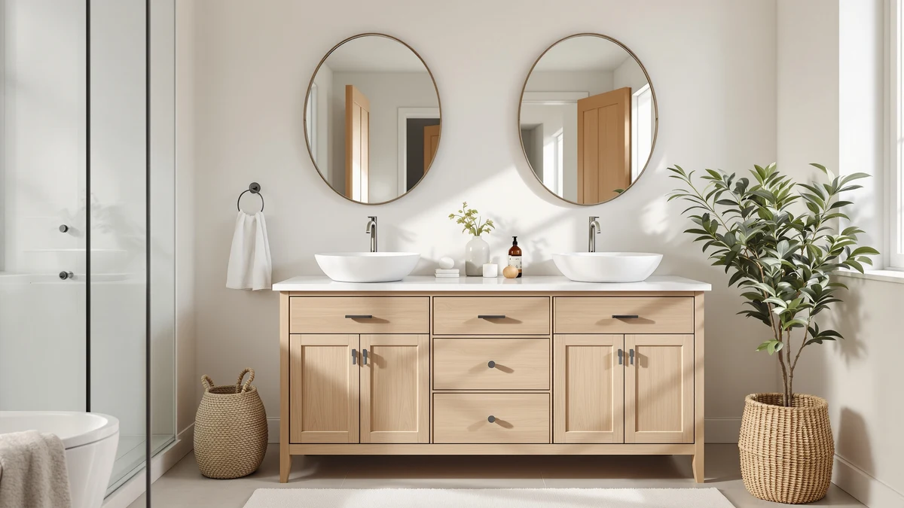

Amerlife Farmhouse Double Sink Bathroom Vanity Review (2026): Worth It?
Prices and picks verified as of November 2026. Independent, reader-supported reviews.


Quick Answer
The AMERLIFE 48" White Farmhouse Double vanity pairs two sinks with a farmhouse-style MDF cabinet at $449.99, the same price as two of the three alternatives we compared it against. It is the strongest double-sink option in this lineup if your bathroom already has a 48 inch footprint, though you should wipe up standing water around both basins promptly since the engineered wood core is more moisture-sensitive than solid hardwood.
Our pick: AMERLIFE 48" White Farmhouse Double at $449.99 Check Price on Amazon
Bottom line: our top pick is the AMERLIFE 48" White Farmhouse Double Sink Bathroom Vanity at $449.99.
Things to Know Before You Buy
- Construction: The cabinet uses MDF and engineered wood rather than solid hardwood, which keeps the price near $450 but means standing water around the sink basins should get wiped up quickly.
- Sink layout: Unlike the single-sink AMERLIFE Freestanding and Quicklock alternatives covered below, this model ships with two sinks built into the same 48 inch top, so your plumbing needs to already support two drains.
- Price: At $449.99, it costs the same as the AMERLIFE Freestanding and the CARPETNAL 60 inch vanity, and $5 more than the Quicklock RTA cabinet.
- Review history: This Amerlife farmhouse double sink bathroom vanity review relies on manufacturer specs and current pricing rather than a star rating, since Amazon has not yet published one for this listing.
- Assembly: Like the other three vanities compared here, it arrives flat-packed and needs assembly before you can mount or plumb it.
This Amerlife farmhouse double sink bathroom vanity review looks at whether the 48 inch White Farmhouse Double model justifies its $449.99 price for a shared bathroom. Two people racing for one sink before work is a daily headache, and a double-sink vanity is the most direct way to remove it if your bathroom already has the floor space. We compared this AMERLIFE model's construction, dimensions and price against three other vanities in the same bracket, including a single-sink AMERLIFE SKU, to see where the double-sink layout actually pays off.
We did not install this vanity or live with it ourselves. Our process is research based: we read the manufacturer's listed materials and dimensions, track the current Amazon price, and set those numbers next to the AMERLIFE Freestanding, the CARPETNAL 60 inch and the Quicklock RTA cabinet to see whether the double-sink version earns its spot. Amazon has not published a star rating or review count for this specific listing, so we say that plainly instead of filling the gap with an invented number.
Why You Should Trust Us
Ilane Tall researches bathroom fixtures and furniture for Best Bathroom Vanities, focusing on cabinet construction, sink configuration and how a vanity's materials hold up over years of daily use. This Amerlife farmhouse double sink bathroom vanity review is built from the manufacturer's published specs, the current Amazon listing price and a side-by-side comparison against three close alternatives, not from physically installing or owning the cabinet. We do not run a fake testing lab, and we do not claim hands-on use of a product we have only researched. When a listing has no public star rating or review count, as is the case here, we note that gap instead of guessing at one.
Our Research Experience
This review does not involve physical testing. We compared the AMERLIFE 48" White Farmhouse Double vanity against its closest-priced competitors using each manufacturer's listed materials, dimensions and sink configuration, then checked those claims against whatever public review data exists. None of the four listings covered in this Amerlife farmhouse double sink bathroom vanity review, including the AMERLIFE itself, has a published star rating or review count at the time of writing, so we relied on listed features, pricing and construction specs alone. We flag that gap below instead of filling it with an invented number, and when a manufacturer's description leaves out a detail a buyer would want, such as faucet holes or drawer hardware, we note the omission rather than guessing.
Overview & Specs

AMERLIFE 48" White Farmhouse Double
What we like
- Two sinks built into one 48 inch top, removing the morning bottleneck of a single-sink vanity
- Farmhouse styling matches the AMERLIFE Freestanding model below, useful if you are pairing vanities across a larger remodel
- Priced at $449.99, in line with two of the three alternatives in this review
Flaws but not dealbreakers
- MDF and engineered wood construction is more moisture-sensitive than solid hardwood, and a double-sink top means two basins to keep wiped down instead of one
- No public Amazon rating or review count yet, so early buyers are relying on the listing alone
- 60 inches of counter space, like the CARPETNAL offers, is not available at this 48 inch width
| Material | MDF / engineered wood |
| Size | 48“ |
The AMERLIFE 48" White Farmhouse Double vanity, the focus of this Amerlife farmhouse double sink bathroom vanity review, earns the top spot here because it is the only 48 inch option built around two sinks instead of one. The cabinet uses an MDF and engineered wood core finished in white with farmhouse detailing, and the single 48 inch top houses both basins close enough together to fit a standard double-sink rough-in without widening the wall. At $449.99 it matches the AMERLIFE Freestanding and the CARPETNAL on price, and costs $5 more than the Quicklock RTA cabinet, so the double-sink layout does not carry a real premium over the single-sink alternatives in this lineup.
Where this vanity falls short is the same place every option in this review falls short: track record. Amazon shows no rating or review count on this listing yet, so you are weighing it on specs and styling rather than years of owner feedback. The MDF and engineered wood build also means two sink basins to wipe down promptly instead of one, since standing water left on an engineered wood surface swells faster than it would on solid hardwood. If your bathroom already plumbs for two sinks in a 48 inch space and the farmhouse look fits your remodel, that trade-off is a reasonable one to accept.
What We Liked
Across this Amerlife farmhouse double sink bathroom vanity review, the two-sink layout is the clearest advantage. Few vanities at this width commit to a double-sink top instead of forcing you up to 60 inches or wider to get a second basin. Farmhouse detailing on the cabinet front also matches the AMERLIFE Freestanding model, so the pairing works if you are outfitting more than one bathroom in a remodel, and the $449.99 price lines up evenly with two of the three alternatives covered here, which makes it simple to compare on sink count and styling rather than hunting for a hidden cost difference.
What Could Be Better
Across this Amerlife farmhouse double sink bathroom vanity review, the biggest gap is review history. None of the four listings covered here, including both AMERLIFE SKUs, have collected a public rating yet, so part of the decision rests on trusting the manufacturer's stated materials rather than reading through owner complaints. The MDF and engineered wood core also asks for more upkeep around two sink basins instead of one, and that adds up over the years if water routinely sits on the counter after use.
Shoppers who want proof of how the white finish holds up against daily double-sink splashing will not find that here yet, simply because the listing has not been live long enough to generate it. The same gap applies to the CARPETNAL and Quicklock alternatives, so this is a category-wide limitation rather than a flaw specific to one SKU. If an established track record matters more than the convenience of two sinks, weigh that trade-off before you commit to any of the four vanities compared here.
Who Is It For?
The AMERLIFE 48" White Farmhouse Double vanity fits a shared bathroom where two people need separate sinks and the plumbing already supports a double-sink rough-in at 48 inches. It is a reasonable match for a budget remodel under $500 that still wants farmhouse styling instead of a plain cabinet front. It is a weaker fit if you want a proven Amazon rating before you buy, if your bathroom only has plumbing for one sink, or if you need more than 48 inches of counter space, where the CARPETNAL's extra foot below is the better match. Renters planning a short stay may also prefer a lower-commitment single-sink option, since replumbing for a second basin is not a weekend project.
Alternatives to Consider
If the AMERLIFE 48" White Farmhouse Double vanity does not fit your bathroom or your plumbing, these three alternatives cover different priorities: a single-sink farmhouse match from the same brand, a wider 60 inch cabinet, and the lowest entry price of the group in a ready-to-assemble format.

Also Great
AMERLIFE 48" Farmhouse Freestanding Bathroom
The single-sink version of this AMERLIFE farmhouse design, at the same $449.99 price, for a bathroom that only needs one basin and still wants the exposed-leg farmhouse look.
$449.99
Check Price on Amazon
Also Great
CARPETNAL 60 Inch Bathroom Vanity
Twelve more inches of counter space than the AMERLIFE double-sink model, at the same $449.99 price, for a bathroom with the wall space to spare and a preference for a more conventional cabinet front.
$449.99
Check Price on Amazon
Best Value
Quicklock RTA (Ready-to-Assemble) | Bathroom
The lowest price of the four at $444.99, in a ready-to-assemble format, for buyers willing to trade a few dollars in savings for assembly time.
$444.99
Check Price on AmazonIs the AMERLIFE 48" White Farmhouse Double vanity worth the $449.99 price?
For a shared bathroom that already has plumbing for two sinks, yes.
How does the AMERLIFE 48" White Farmhouse Double compare to the CARPETNAL 60 Inch vanity?
The CARPETNAL is 12 inches wider and costs the same $449.99, so it mainly comes down to how much wall space your bathroom has and whether you need the extra counter room.
Frequently Asked Questions
Is the AMERLIFE 48" White Farmhouse Double vanity worth the $449.99 price?
For a shared bathroom that already has plumbing for two sinks, yes. The MDF and engineered wood build keeps the price down compared to solid hardwood double-sink vanities, and the 48 inch width fits a standard double-sink rough-in without widening the wall.
How does the AMERLIFE 48" White Farmhouse Double compare to the CARPETNAL 60 Inch vanity?
The CARPETNAL is 12 inches wider and costs the same $449.99, so it mainly comes down to how much wall space your bathroom has and whether you need the extra counter room. The AMERLIFE's double-sink layout at 48 inches is the tighter fit for bathrooms that cannot spare the extra foot.
Is MDF durable enough for a double-sink bathroom vanity?
It holds up fine under normal bathroom humidity as long as you wipe up standing water around both sink basins promptly. MDF and engineered wood cores swell faster than solid hardwood if moisture sits on the surface for long stretches, and that matters more with two basins in daily use instead of one.
Final Verdict
This Amerlife farmhouse double sink bathroom vanity review comes down to how much you need two sinks in a 48 inch footprint. The AMERLIFE 48" White Farmhouse Double vanity is the pick for a shared bathroom with existing double-sink plumbing, since its two-basin top is the only one in this lineup built around that layout at this width. If you would rather have 12 extra inches of counter space at the same price, or you want a ready-to-assemble option that saves a few dollars, the alternatives above cover those cases without straying far from the same $444.99 to $449.99 range. Whichever vanity you choose, confirm the current price and stock before ordering, since Amazon listings in this category shift more often than the pages themselves get updated.